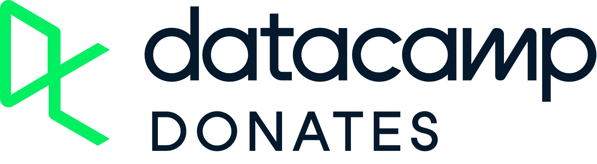
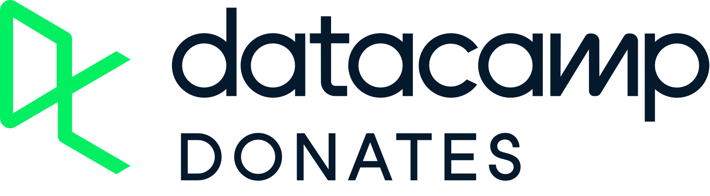
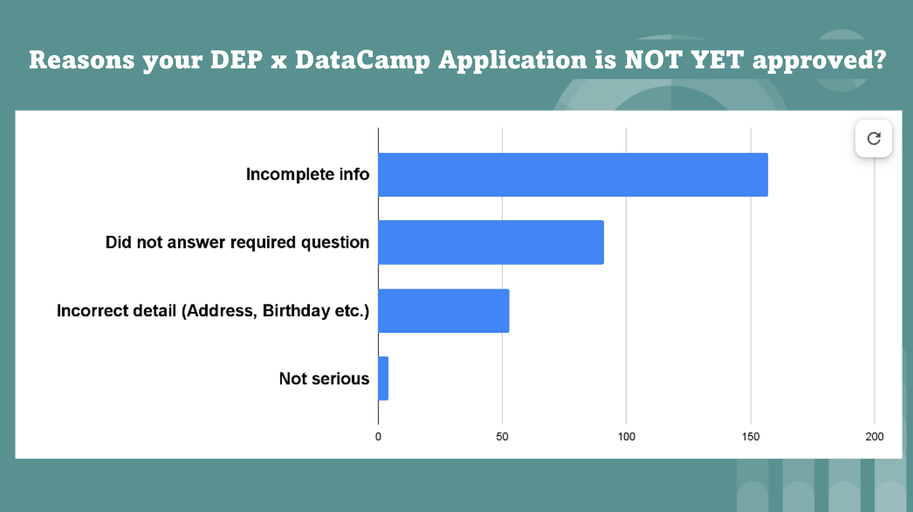

DataCamp Donates Application Process
“Data Engineering Pilipinas is an official DataCamp Donates Partner. Members of the community can avail of FREE DataCamp Access through a scholarship application process.”
DEP x DataCamp Donates Scholarship Application Now Open!
 

We’re thrilled to announce that Data Engineering Pilipinas is now a proud partner of DataCamp Donates! Thanks to this partnership, we’re offering exclusive scholarships for free premium access to DataCamp’s top-tier data science courses and resources.
What to Expect:
- Premium Access: Unlock top-tier data science courses from DataCamp.
- Learning Journey: Enhance your skills and advance your career with cutting-edge content.
- Community Support: Join a network of like-minded learners and grow together.
Rules and Expectations:
- Monthly Assignments: 4,000 XP (roughly 3 hours of learning per month)
- Use Hashtags: Tag @DataCamp and use #dcdonates in your posts to keep the community updated.
- Engage with Content: Actively participate in the courses and engage with other learners.
- Share Success Stories: We’d love to hear and share your success stories! Let us know how the courses are helping you grow.
What You Need to Do:
- Apply Now: Submit your application for the scholarship.
- Engage: Plan to actively participate and complete courses.
- Finish Monthly Assignment: 4,000 XP, failed to do so will have your access revoked.
We’re excited to support your learning journey and can’t wait to see the incredible progress you make. Apply today and take the first step towards mastering data science!
#DataCampDonates #Scholarship #DataEngineeringPilipinas #DataAnalysis #DataScience #DataEngineering #MachineLearning #ArtificialIntelligence #DataLiteracy #ApplyNow #dcdonates
Start Your Application:
DEP x DC Donates - Frequently Asked Questions
Q1: Who is eligible for the DataCamp sponsorship?
- A1: The DataCamp sponsorship is available to all Filipino members of Data Engineering Pilipinas. The scholarship includes 12 months of unlimited premium access to Datacamp.
Q2: Why was my application declined or not approved yet?
- A2: Applications may be declined or not approved yet for several reasons, including:
- Each application is reviewed comprehensively to ensure that only genuine applicants receive approval.
- Incomplete Information: Your application may be missing critical details such as full name, correct birthday, city, country, or other required information.
- Incorrect Information: Provided details might be inaccurate or unverifiable.
- Pending Review: Your application might still be under review; please allow some time for the process.
To address these issues, ensure all information provided is complete and accurate.
Q3: How can I avoid common mistakes in my application?
- A3: To avoid common mistakes:
- Carefully Read Instructions: Follow all instructions on the application form.
- Provide Accurate Information: Ensure personal details like full name, birthday, city, and country are correct.
- Complete All Sections: Fill out every section of the form completely.
Q4: What should I do if my application is incomplete?
- A4: If you suspect your application is incomplete:
- Double-check Personal Details: Ensure full name, correct birthday, city, country, and other required information are accurately filled.
- Complete the Form: Fill out all sections of the form.
If it has been a while since submission without a response, review and complete your application.
Q5: How will I know if my application has been approved?
- A5: If approved, you will receive a confirmation email with next steps. If no confirmation is received within the expected timeframe, your application may still be under review.
Q6: Is there a chance that my access will be revoked?
- A6: There are a few mechanics that will entail removal of DataCamp access.
- Non-Acceptance: If you have been invited but do not accept after a few reminders, your invitation will be withdrawn.
- Non-Usage: Accounts are being monitored and if they are not being used, we will revoke your access.
We only have limited slots for the partnership and we want to prioritize access to those that need and will use the platform.
Q7: I really like this initiative, how do I support it?
- A7: You can support it through the following:
- Invite your friends that are interested in data to join our community.
- Invite people to apply to our DEP x DC Scholarship Program.
- Post about your journey and successes and follow the posting rules in social media found here.
- Help other learners in the Data Engineering Community by answering their questions, sharing your thoughts and best practices, and promoting the program.
- Share your milestones and success stories to DataCamp here.
Q8: Who can I contact if I have questions about my application?
- A8: Kindly review the DATACAMP DONATES x DEP Partnership mechanics for further guidance or ask the community. Visit Data Engineering Pilipinas and join the different DEP communities to connect with other members.
Q9: How long before you take a slot from someone?
- A9: A Datacamp premium is around 29USD / month, So we want to maximize that for the community for the next 12 months. These are general guidelines, but the message is if you don’t use it, you don’t need it. You may get removed automatically without warning.
- if we send an invite and no acceptance after 2 weeks
- if accepted but no usage after 2 weeks
- if 4K XP monthly assignment is not completed within 4 weeks
- the principle is, if you are using it you shouldn’t worry.
Q10: Why is my application not yet approved?
- A10: Here are common reasons why your application may not be approved. In essence, it suggests a lack of sincerity or authenticity in your intention to apply for the scholarship. While we want to provide access to everyone, we have limited scholarship slots as well as volunteer resources to review applications. We aim to filter out individuals who may take the opportunity but not make use of it. Please help us by being as honest as possible in your application.

Q11: Can I share my success story? - A11: We are currently ALWAYS in the processing of promoting the Data Engineering Pilipinas x Datacamp Donates partnership. If you’ve benefited from this scholarship and would love to see it continue, we’d greatly appreciate your support. Sharing your success story—how access to DataCamp has helped your learning or career journey—can make a big difference in demonstrating the impact of this initiative. Your testimonial will help strengthen our case to keep this valuable opportunity alive for future scholars.
SUBMIT YOUR SUCCESS STORY: https://docs.google.com/forms/d/e/1FAIpQLSeZK-3tP6zzzhOn5LpejKmzAf9Wu0rZzQ2EQ_g2sYxvLPMlfA/viewform
Q11: What happens if it expires? - A11: There are two things that might expire, one is your scholarship, the other is the partnership.
Scholarship - The scholarship expires after 12 months. It can also expire if you do not use it for a long time (in terms of XP earned). You can re-apply again on the form if you’d like to renew your access.
Partnership - DEP’s partnership with Datacamp Donates is worth 12 months as well. So make sure to submit success stories (see above) to keep promoting the impact of our community thru Datacamp and we can continue to renew the partnership.
| Reason for Non-approval | Description | Examples |
|---|---|---|
| Incomplete Information | Applications missing essential details such as name, last name, gender, birthdate, or address may be not approved. These details are crucial for verifying the applicant’s identity and ensuring proper communication. Without complete information, the application cannot be properly reviewed or processed. | No name, last name, gender, birthday, etc. |
| Did Not Answer Required Questions | Certain questions in the application are mandatory and are designed to assess the applicant’s qualifications, goals, or suitability for the scholarship. Failing to answer these required questions indicates an incomplete application, which cannot be considered for evaluation. | Required questions were answered with ?????? |
| Incorrect Details | Providing incorrect information, such as an inaccurate address or wrong birthdate, may lead to disqualification. Accurate details are essential for validating the applicant’s eligibility and ensuring that all provided data is truthful and up to date. Errors in basic information can reflect a lack of attention to detail. | Birthday listed as 2024, country as 8, age listed as 23 years, wrong spelling of “Philippines.” |
| Not Taking the Application Seriously | Comments or answers that lack seriousness or are inappropriate may lead to non-approval. The application process is designed to evaluate candidates’ commitment and sincerity toward the scholarship. Submissions that appear careless or disrespectful indicate a lack of seriousness and can result in disqualification. | All answers are just “yes” to all questions, inappropriate responses such as “ChatGPT said this and that.” |
We have a lot of FREE LEARNING RESOURCES which you can utilize if you wish for alternatives.